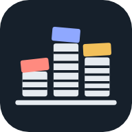

Paper Trail
Scan the pile. Claude reads each document, files it to your Google Drive, and tells you what to shred.
Paper Trail asks for Drive access so it can file your scans. It only sees the files it creates.

Scan the pile. Claude reads each document, files it to your Google Drive, and tells you what to shred.
Paper Trail asks for Drive access so it can file your scans. It only sees the files it creates.
Claude reads each document and gets it ready to file.